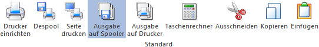

Ø Drucker einrichten
Damit kann die Druckereinstellung der 50 Drucker, die in der WinLine zur Verfügung stehen, verändert werden.
Ø Despool
Druckt gespeicherte Druckaufträge aus
Ø Seite drucken
Durch Anwahl des Buttons wird die aktuelle Seite der aktuellen Auswertung, welche am Bildschirm angezeigt wird, auf dem Drucker bzw. in den Spooler ausgegeben.
Ø Ausgabe in Spooler / auf Drucker
Mit diesen beiden Buttons kann entschieden werden, ob der Ausdruck in den mesonic-Spooler oder auf den Drucker erfolgen soll. Ist der Button "Ausgabe auf Spooler" angewählt erfolgt der Ausdruck in den Spooler, ist der Button "Ausgabe auf Drucker" angewählt erfolgt der Ausdruck auf den Drucker.
Ø Taschenrechner
Es wird der Taschenrechner mit integrierten Grundrechnungsarten ausgerufen (Tastatur "SHIFT + F2").
Ø Ausschneiden
Damit kann in jedem Eingabefeld der markierte Inhalt gelöscht und gleichzeitig in die Zwischenablage gespeichert werden (Tastatur "STRG + X").
Ø Kopieren
Durch Anwahl dieses Buttons wird der markierte Bereich eines Eingabefeldes oder eines Bildschirmausdruckes in die Windows-Zwischenablage kopiert (Tastatur "STRG + C").
Ø Einfügen
Fügt den Inhalt der Windows-Zwischenablage in das aktuelle Feld ein (Tastatur "STRG + V").